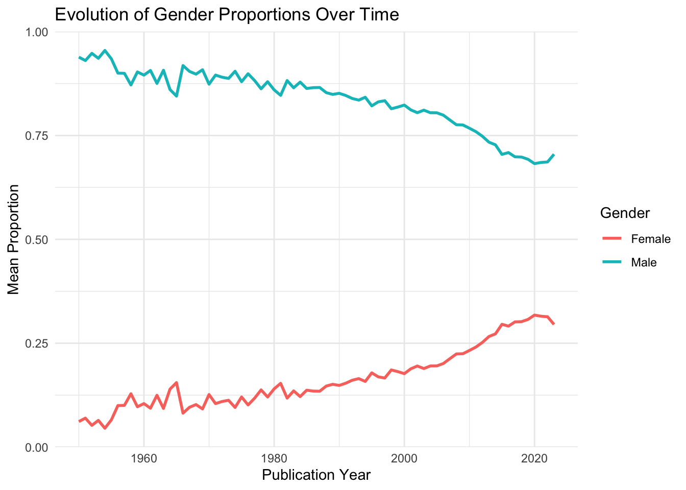
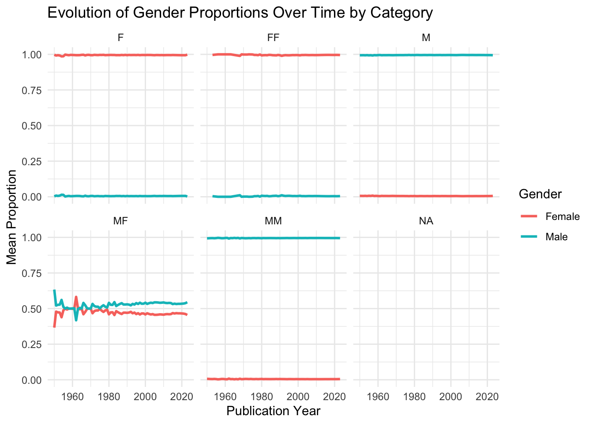
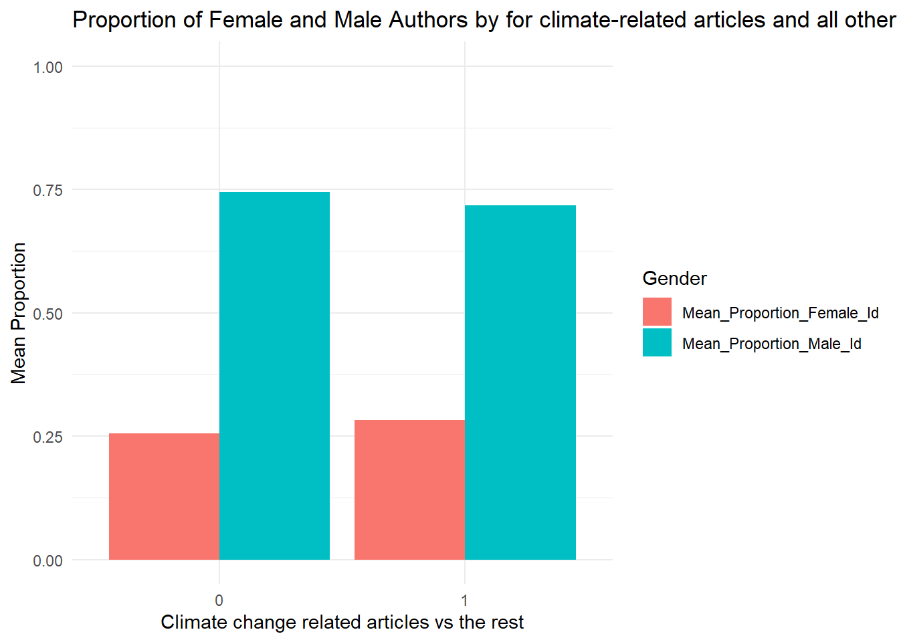
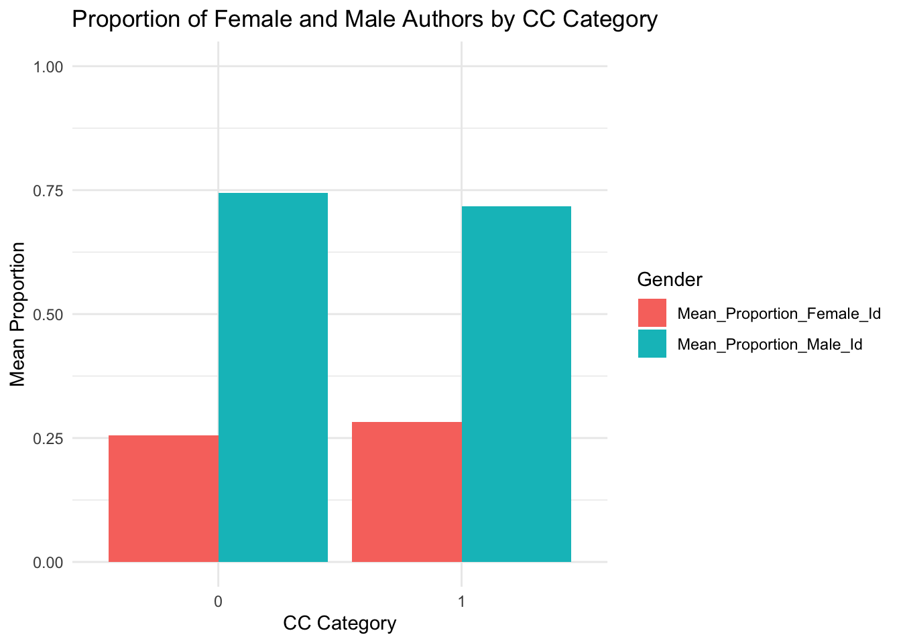
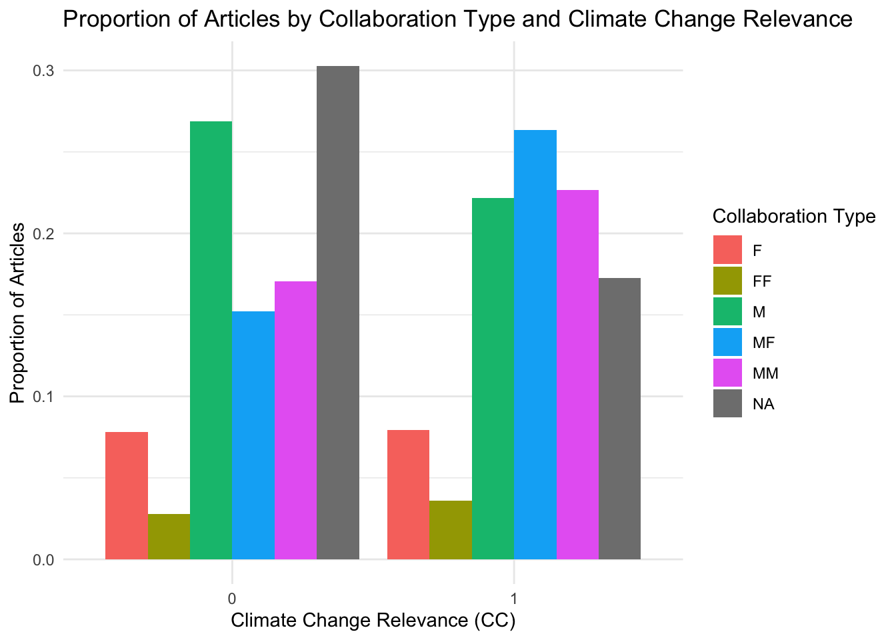

Quantifying interactions between economics of climate change, the rest of economics and other disciplines
Introduction
Gender disparities in scientific research remain a pressing issue, with significant impacts on the balanced development of the field. In particular, gender role positioning and educational restrictions continue to hinder equitable progress in scientific research. This study aims to provide a quantitative analysis of these gender disparities within the specific context of climate economics, considering various levels of journal prestige and types of collaborations.
Previous research has delved into the broader issue of gender disparities in economics. For instance, David Card, Stefano Della Vigna, Patricia Funk, and Nagore Iriberri (2019), in their paper “Are Referees and Editors in Economics Gender Neutral?”, examined the role of gender in the evaluation of economic research. They highlighted that editorial process is not gender-neutral when considering differences in paper quality and field: female-authored papers get more citations than male-authored papers. It shows that female researchers have characteristics that lead to higher citations, especially differences in empirical content but are held to a higher standard, perhaps because of stereotype biases.
Similarly, Junwan Liu, Yinglu Song, and Sai Yang (2019), in their paper “Gender Disparities in the Field of Economics,” analyzed gender disparities in terms of research output and influence across different countries, institutions, and journal levels. Their findings indicate a dominance of male authors in terms of research output and influence, with significant geographical variations. Their study also revealed that the output of both male and female authors decreases logarithmically with career age, while the influence of female authors tends to increase with longer careers due to higher qualifications.
Building on these foundational studies, our research utilizes a larger and more diverse data set, drawing from the Web of Science database and Scopus, which includes information on over 600,000 articles. Our analysis focuses on climate economics, aiming to uncover gender disparities by examining differences across journal levels and collaboration types. Specifically, we categorize journals into top five and top thirty tiers and analyze the degree of mixed-gender collaborations within these articles. Our objective is to validate and extend previous findings within the niche of climate economics, thereby contributing to the understanding of gender inequalities in this crucial area of research.
Data cleaning and gender assignment algorithm
To accurately assess gender disparities in scientific research, a rigorous data cleaning and gender assignment process is essential. This section outlines the methodology employed to clean the data set and assign gender probabilities to authors’ first names.
Data Cleaning Process
Initially, we considered a sample of 60,000 observations, focusing on articles with 15 authors or fewer, which constitute 99.95% of the data set. For each article, we extracted in our initial data base all authors’ full names, names and first names. The cleaning process aimed to ensure compatibility with the “gender” package in R and involved several steps. We applied this cleaning for full names, first and last names. We first removed text in brackets, extraneous spaces, in particular those at the beginning and end of names and any letters followed by a period. In handling compound names, we retained only the first name. Finally, we replaced all accents with their unaccented equivalents. These steps ensured that the first names were in a suitable format for gender identification.
Gender Assignment Algorithm
After cleaning the data, we utilized the “gender” package in R to associate a gender and gender probabilities to any first name. To do so, we first create functions that compute gender probability for a given first name employing two methods: the “ssa” method, which uses data from the US Census List, and the “napp” method, which reallocates gender probabilities for names not identified by the “ssa” method. This dual-method approach resulted in a comprehensive data frame combining the results from both methods and giving, for each unique first name, the probability for the name to be female and male. This data frame finally gives all first names that for which we have an assigned gender probability.
We then developed an algorithm to assign a gender to each author’s first name, using four main databases: the final data frame from the previous gender probability assignment, a list of common Chinese first names, and lists of the top 10 male and female economists. This algorithm allows to create three new variables : a variable which attributes a gender to each first name and variables that give the probability for the first name to be male or female.
For the gender variable, the algorithm uses several conditional steps. This variable can take value NA, unknown, male or female. We first focus on the full name for each author in the algorithm to define the variable gender. If the full name is missing in our initial data base, the gender variable is set to NA. Otherwise, if the full name is in the list of top 10% of female economists, gender is set to female. Reciprocally, if full name is in the list of top 10% of male economists, gender is set to male. Then, we treat first name for each author in the algorithm to define the variable gender. If first name is missing in our initial data base, gender variable is set to NA. If first name is in the list of common chinese first name, gender is set to “unknown”. If first name is absent from the list of first names with measured gender probability (absent from the data frame that we created during the prevous step), gender is set to “unknown”. For recognized first names, if the probability of being male in this list was greater than 90%, the name was assigned “male”; if less than 10%, it was assigned “female”; if between 10% and 90%, the gender was marked as “undecided”.
Additionally, the algorithm created variables indicating the probability of each first name being male or female, only if gender is assigned. These variables are varying between 0 and 1 or take value NA. As for the gender variable, the algorithm first treat full names for each author and then first names. If the full name is missing from our initial data base, both probabilities are set to NA. If the full name is is the list of top 10% of female economists, the probability for the first name to be female is set to 1 and 0 for male. Reciprocally, if the full name is in the list of top 10% of male economists, the probability for the first name to be female is set to 0 and 1 for male. Then, we treat first name for each author in the algorithm to define probabilities gender. If a first name is missing from our initial data base, both probabilities were set to NA. If a first name appeared on the list of common Chinese names, both probabilities were also set to NA. If first name is absent from the list of first names with measured gender probability (absent from the data frame that we created during the previous step), both probabilities were set to NA. If the first name was found and recognized as “male” or “female,” the respective probabilities were assigned accordingly from the data frame assigning gender probabilities.
This comprehensive algorithm ensures a robust assignment of gender probabilities to each author’s first name, facilitating a detailed analysis of gender disparities in the field of climate economics.
Quality and limits of the algorithm
Having cleaned up the data and created our algorithm for assigning a gender to each existing first name, we now check the quality of our algorithm.
Comparison between total number of first names and first names with assigned gender before the use of an assignation gender algorithm
First and before constructing our algorithm, we can compare the total number of unique first names in our database with the total number of first names that can be correctly assigned to a gender. The latter is calculated using the data frame, which uses the “ssa” and “napp” methods to assign a gender to the first name.
[1] 95589We have 95,589 unique first names in our database. The total number of first names that can be assigned to a gender thanks to the “ssa” and “napp” method is 24 142. We therefore had roughly 75% of first names whose gender which could not be determined only using the SSA and NAPP methods, and which will not be recognized by these methods.
Indeed, unmatched first names appear to come from non-Western cultures. These first names are fairly rare and do not recur regularly in the articles, so they have little effect on matching. However, this is an important limitation in that we are not able to assign a gender probability to non-Western first names, insofar as those first names will be defined as “unknown” while using the list of common Chinese names in our algorithm. This limit omits a whole part of the analysis for non-Western first names and therefore introduces a significant selection bias. However, the construction of the algorithm as we did and especially the use of lists for top 10 male and female economists will help us to identify correctly a large part of those unidentified gender.
Analysis of gender assignment at article level
It is also possible to perform the analysis using the variable that gives, by article, the percentage of authors whose gender is correctly identified among the total number of authors.
Nb_articles NoGender AllGender Gender_Larger0.5 Gender_Larger0.9
1 1136055 0.2991554 0.4840074 0.6524684 0.4844765
Gender_Larger0.25 Mean_IdentifiedGender Median_identifiedGender
1 0.6949382 0.5986791 0.75Gender analysis at article level shows that around 30% of articles do not allow gender to be assigned to a single author. This indicates a significant difficulty in identifying the gender of a significant proportion of articles. On the other hand, for over 48% of articles, the gender of all authors is correctly identified. This majority proportion demonstrates a certain efficiency in gender assignment. For 65% of articles, it is possible to assign the gender to at least half of the authors. This shows that most articles have at least partial gender identification among their authors. Around half the articles allow gender to be assigned to 90% of the authors. This high proportion reflects almost complete gender identification for a significant proportion of articles, illustrating the effectiveness of the algorithms or methods used for gender assignment. Finally, for around 70% of the articles, it is possible to assign the gender to 25% of the authors. This figure indicates that, even in the most difficult cases, it is still possible to determine the gender of a proportion of authors, which may be sufficient for certain statistical analyses.
Descriptive statistics and data analysis
library(ggplot2)OneGender_by_Articles <- Corpus.CleanedNames.2 %>%
summarize(Nb_articles = length(ratio_identified_gender), # Nb total d'article
NoGender = length(ratio_identified_gender[is.na(ratio_identified_gender) | ratio_identified_gender == 0]) / Nb_articles)
OneGender_by_Articles Nb_articles NoGender
1 1136055 0.2991554First, we can remind that the absolute number of articles with at least 1 author identified in terms of gender is 1 136 055. Thus, there is at least 70% of our articles whose gender has been assigned to at least one author.
Overall Temporal evolution
# A tibble: 75 × 3
PY Mean_Proportion_Female_Id Mean_Proportion_Male_Id
<dbl> <dbl> <dbl>
1 1950 0.0614 0.939
2 1951 0.0697 0.930
3 1952 0.0523 0.948
4 1953 0.0642 0.936
5 1954 0.0454 0.955
6 1955 0.0656 0.934
7 1956 0.100 0.900
8 1957 0.100 0.900
9 1958 0.128 0.872
10 1959 0.0971 0.903
# … with 65 more rowsWarning: Removed 2 rows containing missing values (`geom_line()`).
This section presents the evolution of the average proportion of female and male authors in academic publications, from 1950 to 2023. It reveals significant trends over several decades, highlighting gender dynamics in academic research.
From 1950 to 1970, the average proportion of female authors remained remarkably low, hovering around 0.06. During this period, male authors largely dominated publications, with proportions approaching 0.94. This disparity underlines the predominance of men in the academic field at the time.
Between 1970 and 1990, a slight increase in the proportion of female authors was observed, rising from around 0.12 to 0.15. This period marks the beginning of a gradual change, although men continue to represent a substantial majority.The increase remains modest, but indicates a trend towards gender diversification among academic authors.
From the 1990s onwards, the average proportion of female authors began to rise more significantly. By 1995, this proportion had risen to around 0.18, indicating greater inclusion of women in academic publications. This trend has continued steadily, with the proportion reaching around 0.30 in 2017. At the same time, the average proportion of male authors is gradually decreasing, but remains dominant.
Since 2017, the average proportion of female authors has exceeded 0.30, reaching 0.32 in 2020. This growth indicates increasing gender parity, although men continue to constitute a relative majority with an average proportion around 0.68. Recent years have seen a stabilization of these proportions, with slight fluctuations.
In conclusion, this section illustrates a positive trend towards greater inclusion of women in academic research over the decades. Although men are still in the majority, the continuing growth in the proportion of female authors bears witness to a gradual shift towards more balanced gender representation in scientific publications.
Temporal evolution according to categorical variables
# A tibble: 435 × 4
PY category_gender Mean_Proportion_Female_Id Mean_Proportion_Male_Id
<dbl> <chr> <dbl> <dbl>
1 1950 F 0.997 0.00276
2 1950 M 0.00617 0.994
3 1950 MF 0.366 0.634
4 1950 MM 0.00694 0.993
5 1950 <NA> NaN NaN
6 1951 F 0.992 0.00819
7 1951 M 0.00611 0.994
8 1951 MF 0.479 0.521
9 1951 MM 0.00610 0.994
10 1951 <NA> NaN NaN
# … with 425 more rowsWarning: Using `size` aesthetic for lines was deprecated in ggplot2 3.4.0.
ℹ Please use `linewidth` instead.Warning: Removed 152 rows containing missing values (`geom_line()`).
This section provides an analysis of the evolution of average author proportions by gender from 1950 to 2023, and highlights significant dynamics in academic collaborations.
Analysis of gender proportions in mixed collaborations (MF) from 1950 to 2023 reveals that in 1950, female authors represented an average of 37% of mixed teams, compared with 63% for male authors. This male dominance persisted until the 1960s. In the 1970s, the average proportion of female authors reached 48%, marking progress towards greater integration of women. From the 2000s onwards, the proportion of women authors continued to rise, although at just under 46%, reflecting a positive trend towards greater parity.
The data thus show a gradual integration of women into mixed collaborations, indicating steady progress towards gender parity in academic research, despite the persistence of a slight male majority.
Temporal evolution according to categorical variables, by number of articles
`summarise()` has grouped output by 'PY'. You can override using the `.groups`
argument.# A tibble: 435 × 3
# Groups: PY [75]
PY category_gender nb_articles
<dbl> <chr> <int>
1 1950 F 27
2 1950 M 491
3 1950 MF 12
4 1950 MM 33
5 1950 <NA> 368
6 1951 F 35
7 1951 M 525
8 1951 MF 6
9 1951 MM 21
10 1951 <NA> 365
# … with 425 more rowsWarning: Removed 6 rows containing missing values (`geom_line()`).Warning: Removed 6 rows containing missing values (`geom_point()`).
Analysis of data on the number of articles by gender category from 1950 to 2021 reveals some interesting, albeit nuanced, trends. In 1950, the “M” category (exclusively male) dominated, with 491 articles. The “F” (all-female) and “MF” (mixed) categories accounted for 27 and 12 items respectively.
In subsequent years, trends changed significantly. For example, in 1960, although the “M” category remained dominant with 381 items, the “F” and “MM” categories showed an increase compared to 1950. However, missing data also began to appear more pronounced.
The 1970s mark a notable change, with a significant increase in the number of articles in all categories, including a notable rise in missing data. The “F” category began to show gradual growth, reaching 130 articles in 1970.
From the 2000s onwards, all categories see a marked increase in the number of articles, reflecting a global expansion of academic research. The “MF” (mixed collaboration) category grows particularly rapidly, peaking in 2021 with 16,267 articles, but missing data also increases drastically.
In conclusion, these data illustrate not only the quantitative expansion of scientific research over the decades, but also changes in the gendered composition of research teams, with a significant increase in mixed collaboration. However, it is crucial to take into account the impact of missing data, which can influence the interpretation of these upward trends.
Analysis of articles on climate change at an aggregate level
# A tibble: 2 × 5
CC Mean_Proportion_Female_Id Median_Proportion_Female_Id Mean_Pro…¹ Media…²
<dbl> <dbl> <dbl> <dbl> <dbl>
1 0 0.255 0.00505 0.745 0.995
2 1 0.283 0.016 0.717 0.984
# … with abbreviated variable names ¹Mean_Proportion_Male_Id,
# ²Median_Proportion_Male_Id
Analysis of the data on articles relating to climate change, grouped according to the binary variable “CC” (climate change), reveals notable differences in the gendered composition of authors.
Looking at the descriptive statistics, we see that in the category where the theme of climate change is central (“CC = 1”), the average proportion of female authors is slightly higher than in the “CC = 0” category. In detail, the average proportion of female authors is 28.29% in the “CC = 1” category, compared with 25.53% in the “CC = 0” category. On the other hand, the “CC = 0” category shows a greater predominance of male authors, with an average of 74.47%, compared to the “CC = 1” category where the average is 71.71%.
These results highlight a distinct gendered distribution in climate change-related publications, with a predominance of male authors in both categories but more female authors in articles that focus on climate change, thus indicating varied dynamics in gender participation depending on the specific research theme.
Climate change, category gender and number of articles
# A tibble: 12 × 3
CC category_gender nb_articles
<dbl> <chr> <int>
1 0 F 86249
2 0 FF 30631
3 0 M 296893
4 0 MF 167934
5 0 MM 188404
6 0 <NA> 334413
7 1 F 2503
8 1 FF 1131
9 1 M 6994
10 1 MF 8310
11 1 MM 7149
12 1 <NA> 5444
Analysis of the data on the number of articles relating to climate change, represented by the binary variable “CC” (climate change) and the gender category, reveals some interesting trends in the distribution of publications.
Looking at the descriptive statistics, we observe a marked disparity in the number of articles published according to gender category and type of scientific research. In the “CC = 0” category (not focused on climate change), the distribution of articles by gender is significantly different from that observed in the “CC = 1” category (focused on climate change).
For the “CC = 0” category, which does not deal specifically with climate change, the data show a significant predominance of articles attributed to the masculine (296,893 articles) and feminine (86,249 articles) genders, followed by mixed gender combinations (167,934 articles for MF, 188,404 articles for MM). In contrast, the “CC = 1” category shows lower overall articles numbers, with a similar trend of male predominance, but with a slightly higher proportion of items attributed to mixed gender combinations (8,310 articles for MF, 7,149 articles for MM). Analysis of the number of articles by genre category therefore reveals that, despite the lower overall quantity of articles in the “CC = 1” category, mixed-genre combinations account for a significant share compared with the other categories, underlining an increased diversity in scientific collaborations focused on climate change.
Conclusion
In conclusion, this study provides a comprehensive quantitative analysis of gender disparities within the field of climate economics, focusing on authorship dynamics across different levels of journal prestige and types of collaborations. Our findings underscore several key observations. While strides have been made towards gender equality in academic authorship, persistent disparities necessitate ongoing efforts to promote diversity and inclusivity in research collaborations and methodologies. Addressing these challenges is essential for advancing a more equitable and representative academic landscape in climate economics and beyond.
Firstly, our data analysis reveals persistent gender imbalances in academic publishing, with a notable underrepresentation of female authors across all categories. While the average proportion of female authors is slightly higher in climate change-related articles compared to those not focused on climate change, both areas exhibit a predominantly male authorship landscape. Secondly, our study highlights the impact of collaboration types on gender representation. Mixed-gender collaborations (MF) demonstrate a more balanced distribution of authors, suggesting that fostering such collaborations could contribute to greater gender equity in academic research. Moreover, our analysis of temporal trends reveals a gradual increase in the proportion of female authors over the decades, indicating positive albeit slow progress towards gender parity in academic publishing. This trend is more pronounced in climate economics compared to broader economic research, reflecting evolving dynamics within specific research domains. However, our study also identifies significant challenges in gender assignment methodologies, particularly in handling non-Western names, which remain a crucial limitation affecting the accuracy and inclusivity of gender analyses in academic research.